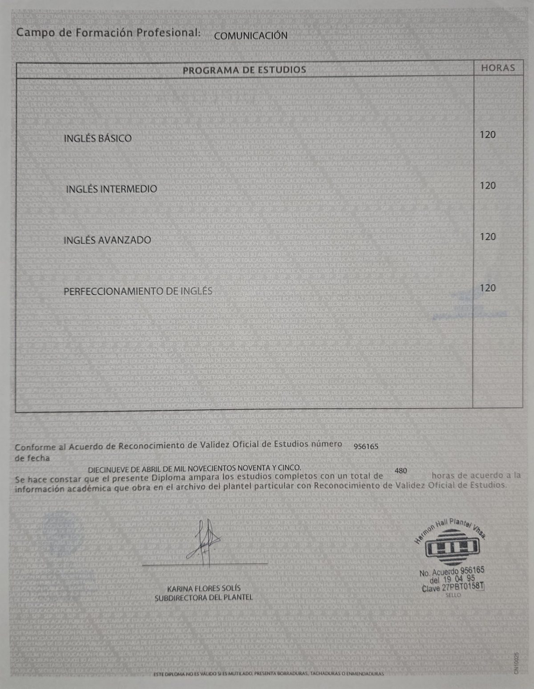

← Volver a certificaciones
Certificación / Idiomas
Especialidad en Inglés
Diploma de Harmon Hall con validez oficial de la SEP, que ampara los estudios completos de la especialidad.
- Institución
- Instituto Harmon Hall
- Emisión
- Marzo 2018
- Duración
- 480 horas
- Validez
- SEP, Dirección General de Centros de Formación para el Trabajo
Programa
- Inglés básico, 120 horas
- Inglés intermedio, 120 horas
- Inglés avanzado, 120 horas
- Perfeccionamiento de inglés, 120 horas
Diploma
